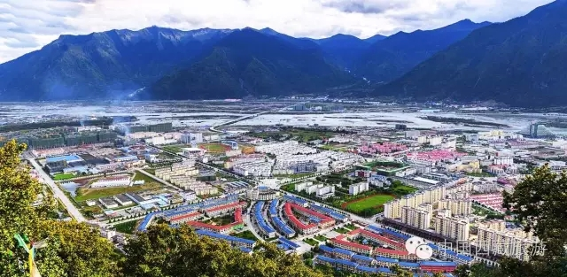

西藏日报

9月16日，第三届藏博会圆满落幕。
7天时间里，第三届藏博会以“人间圣地·天上西藏”为主题，通过6场高端论坛、多场经贸洽谈及招商引资活动，凝聚共识、汇聚智慧，搭建起一个沟通国内外、辐射喜马拉雅地区的平台，让世界看到了真实的西藏，也让西藏连结了世界。
新时期，构建全方位开放新格局的伟大篇章，就此开启。
凝聚共识，引领喜马拉雅地区发展
2015年3月，我国对外发布“一带一路”合作倡议，其中对西藏的定位是“推进西藏与尼泊尔等国家边境贸易和旅游文化合作”。2015年8月，中央第六次西藏工作座谈会进一步指出，要将西藏打造成为中国面向南亚开放的重要通道。
本届藏博会，无论是主题还是总体定位都与国家“一带一路”战略深度契合，符合时代的潮流，更顺应历史的呼唤。
9月11日至12日，国内外专家学者分别发表了主旨演讲。从他们的演讲中，可以清晰地看见我区紧贴中央“一带一路”政策，积极发挥特色优势，打造南亚大通道，努力提升西藏国际化建设的决心、计划和行动。
区党委副书记、自治区主席洛桑江村在讲话中指出，未来西藏将进一步大力发展特色旅游文化产业，对外促进国际文化融合，维护区域和平安全，加速南亚大通道建设，构建西藏和全国新一轮对外开放战略格局。
巴基斯坦驻华大使马苏德·哈立德表示，中巴经济走廊契合两国发展繁荣的美好愿景，“一带一路”构想的实施，把不同地区、不同文化紧紧联系在一起，有助于推动沿线繁荣、维护区域和谐。坚信两国人民定将携手将梦想变为现实。
新的历史机遇面前，要推进这一涵盖众多领域、跨越喜马拉雅山脉的伟大工程，建设南亚开放大通道，是我区对外开放的治本之策，也是我区的历史担当。其中，最需要的是凝聚共识、求同存异，藏博会无疑是与之相适应的重要平台。
尼泊尔副总理兼财政部部长马哈拉·克里希那·巴哈杜尔说，尼泊尔和中国西藏都拥有吸引海内外游客的特色景观，因此双方旅游推广前景广阔。可以展望，一旦尼泊尔及其北部近邻中国西藏的铁路公路运输通道被打通，游客的数量就将会有所提升。
“中国西藏与喜马拉雅区域国家和地区的关系对‘一带一路’战略的成功实施至关重要。”联合国经济发展合作项目首席顾问赖尚龙认为，针对喜马拉雅地区欠发达的社会经济现状，西藏应该成为保护与发展喜马拉雅文化和艺术的领头羊。
汇聚力量，打造世界一流旅游目的地
西藏，雪峰皑皑，江河浩荡，湖水澄碧，森林苍翠，拥有世人惊叹的绝世美 景。又是一年金秋时，天上西藏再次张开怀抱，喜迎四方宾客。
藏博会是我区顺应对外开放新形势，加快建设重要的世界旅游目的地而精心打造的一张靓丽名片。第三届藏博会继续深化“人间圣地·天上西藏”主题，紧紧抓住国家“一带一路”战略机遇，围绕“大旅游、大产业、大发展”，突出“高端、特色、精品”，全力打造西藏旅游升级版。
“没想到，西藏还有这么多没听过的旅游线路。”藏博会期间，前来参观的区外游客情不自禁地发出这样的赞叹。
作为特邀嘉宾，著名主持人郭丽红参加了第三届藏博会精品体验游。去过很多地方的她，深有感触地说：“有风景的地方很多，有文化的地方也很多，但是服务更重要。这次活动使我切身体验到西藏的旅游服务做得非常好，旅游文化和 服务做到了完美融合。”
第三届藏博会上，除了继续推出经典旅游线路外，“旅游+科技”也让西藏旅游大放异彩。
2号馆“VR全景体验区”前总是聚拢着不少参观者。通过戴上VR眼镜，借助电子设备参观者就可以走进阿里暗夜保护区、羊卓雍错等景区，轻轻转动身体，便可以360度欣赏到西藏美景，宛若身临其境。“西藏具备得天独厚的旅游资源，如果能和新一代的VR技术对接，一定可以开发一批全新旅游体验项目，成为西藏特色旅游的有益补充。”该工作人员说。
“羊八井是藏北地区的传统牧区，有很多特色游牧文化产品，我的想法也很简单，就是把游牧文化与旅游结合起来。”第三届藏博会上，西藏乡村文化体验服务中心负责人嘎玛尊追桑布的“西藏牧区体验游”项目受到了很多投资人青睐。他告诉记者，未来几年，他想通过实施“旅游+”战略，找准优势项目，将其发展成乡村脱贫项目产业核心，打造高原乡村旅游升级版。
打造重要的世界旅游目的地，需要吸收借鉴国内外先进经验，更需要与中外旅游界专家学者和企业进行交流对话。当前，我区旅游产业进入提质增效、转型升级的新阶段，游客对旅游服务质量和水平的期望值越来越高。第三届藏博会期间300多名中外旅游界著名专家、学者、政府领导和企业代表共谋西藏旅游发展大计，共商西藏旅游服务标准化体系建设，为推动西藏大旅游大产业大发展提供了良好借鉴。
国家旅游局副局长魏洪涛说，西藏旅游开发潜力大，增长潜力大，做优潜力大，具有无可比拟的产业优势和巨大潜力。希望西藏用全域旅游理念指导旅游发展，优化资源配置，充分考虑旅游业发展需求；构建发展机制，促进旅游协调和协同增长；推动全民参与，积极开展旅游扶贫；坚持高端精品道路，开发特色旅游产品。相信，在大家的共同参与和鼎力支持下，西藏必将建成一流的世界旅游目的地。
“我区旅游业起步于上世纪80年代，历经30余年发展，从无到有，从小到大，实现了从最初的接待事业型到一般经济产业型、再到支柱产业型的跨越。”自治区旅发委党组书记肖传江介绍，仅去年，我区接待国内外游客2017.53万人次，实现旅游总收入281.92亿元，相当于当年全区GDP的27.5%。旅游业催生的消费需求激发了经济活力，为农牧业、藏医药业等其他特色产业发展提供了源源不断的市场。
对接现代，高原传统文化加快走向市场
原创产品、文化知识产权、文化品牌的创造与利用，一直是企业攀登产业高端与价值高端的利器。而西藏文化资源丰富，民族手工艺精美绝伦、非物质文化遗产灿若星辰，被艺术家公认为“文化艺术的资源高地”。
在第三届中国西藏旅游文化国际博览会上，“创意西藏”展台以其展品融合了西藏传统与新奇创意，受到了各路嘉宾和参观者的广泛关注。
“这是西藏首次大规模的创意特色产品集中展示。”西藏则界文化创意发展有限公司相关负责人介绍，此次藏博会中，“创意西藏”携手玛吉阿米、西藏牦牛博物馆、雪堆白、察隅阿扎木碗等12个西藏本土原创品牌，共同组建创意品牌联盟，呈现了包括佛像、唐卡、服饰、特产、藏香等具有浓郁西藏本土特色的创新展品。不仅代表了西藏当代顶尖旅游商品设计，更体现了西藏最富原生态的美。
藏博会上，不仅有我区传统手工技艺的实物展示，还有艺术大师莅临。而技术的融入让传统文化插上了自由飞翔的翅膀。
来自尼木县的“吞·曼仲”藏香原始配方有1000多年的历史，制作工艺及古法配方传承完整，享誉西藏。如今负责人旦增格西在对市场需求详细调研、多次开发试验后，推出电子熏香，不仅使用方便安全，而且保留了藏香的纯天然香味，受到不少参观者的认可追捧。
传统文化产业融入“一带一路”市场空间潜力大
第三届藏博会上，区内外文化产业领域的知名专家学者和文创企业负责人，围绕“加快建设中华民族特色文化保护地”主题，各抒己见，交流观点，奉献智慧。
文化部党组书记、部长雒树刚说，在“一带一路”建设全面推进的大背景下，西藏文化和旅游事业融合发展，将为西藏经济社会长足发展和长治久安提供动力和支持。
文化部对外文化联络局局长谢金英说，西藏是历史上“古南方丝绸之路”、唐蕃古道、茶马古道的重要节点，是中国通往南亚、中亚的重要门户，也是南亚各地文化交融的集中地区，在“一带一路”战略中具有重要位置。
故宫博物院院长、中国文物学会会长单霁翔也表示，将西藏建设成为我国面向南亚的开放重要通道，对于紧密衔接“一带一路”具有重要意义。
如今，我区传统文化借藏博会平台加快走向市场，藏博会也正在成为示范引领我区文化产业进步的拉力器。
从第一届的腾空出世到今年的入轨定型，藏博会见证了西藏的开放与自信。承载着希望和梦想的藏博会，让雪域高原紧紧抓住国家“一带一路”战略机遇，拥抱“世界机遇”，为长足发展和长治久安注入强劲动力。